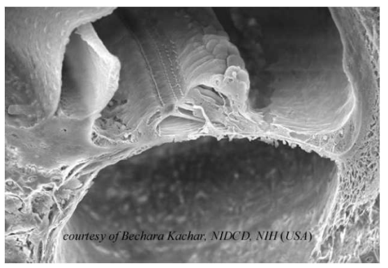
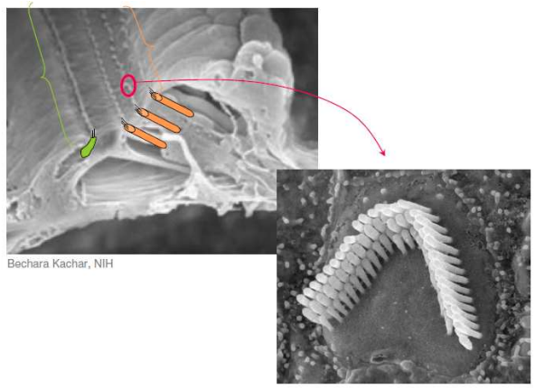
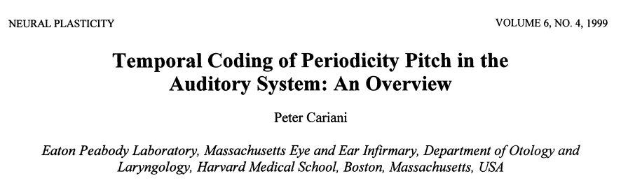
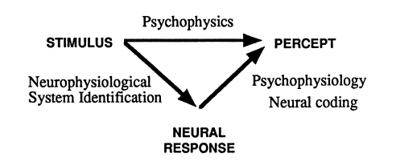
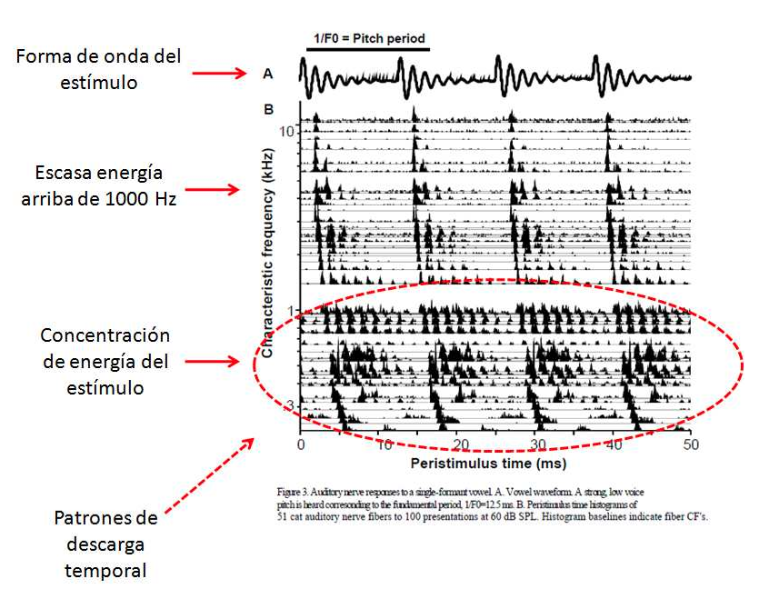
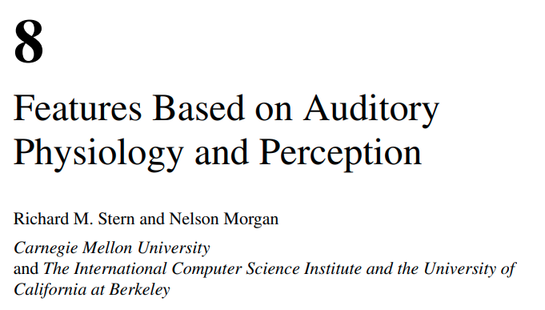
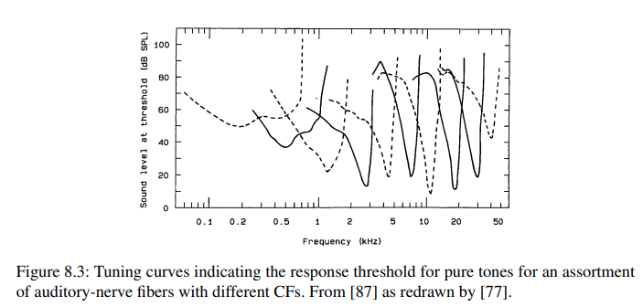
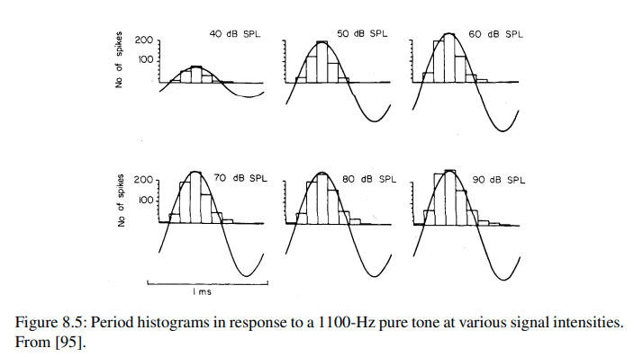
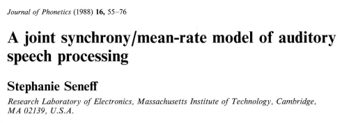
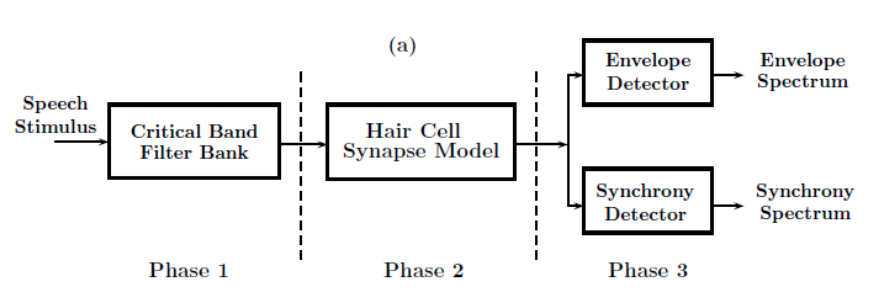

10. Entender la resolución de frecuencia en el sistema auditivo#
El estímulo mecánico se convierte en una código neuronal.
{kind=link}
Los canales ionicos situados en las puntas de las células ciliares, se abren cuando se deflectan los cilios, permitiendo que los iones entren en las celulas.
{kind=link}
 A través del nervio auditivo se transmiten las respuestas neuronales que llevan los features más importantes de los sonidos.
{kind=link}
{kind=link}
Los intervalos de tiempo entre las descargas neuronales dan información de periodicidades en el sonido.
{kind=link}
La respuesta neuronal de cada fibra en el nervio auditivo es dependiente específicamente de qué frecuencia sea el estímulo.
{kind=link}
 
Filtros auditivos: másangostospara mejorar el problema de bajas frecuencias y másanchospara cubrir las altas frecuencias.
{kind=link}
{kind=link}
El sistema auditivo es selectivo en frecuencias
{kind=link}
El sincronismo se asocia a componentes de frecuencias bajas y a detección en presencia de niveles bajos de intensidades.
El detector de envolvente se relaciona con la estructura fina de componentes de frecuencias altas.
{kind=link}
Tres distintas escalas de frecuencia se han usado para simular los anchos de banda variables de los filtros auditivos:
Escala Bark (Heinrich Barkhausen, 1881-1956):
donde \(f\) es la frecuencia en Hz.
Escala Mel (Stevens, Volkman, y Newman, 1937):
Escala ERB (The Equivalent Rectangular Bandwidth), B.C.J. Moore and B. R. Glasberg, 1983: